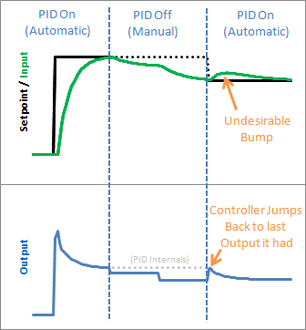

(This is Modification #6 in a larger series on writing a solid PID algorithm)
The Problem
In the last section we implemented the ability to turn the PID off and on. We turned it off, but now let’s look at what happens when we turn it back on:

Yikes! The PID jumps back to the last Output value it sent, then starts adjusting from there. This results in an Input bump that we’d rather not have.
The Solution
This one is pretty easy to fix. Since we now know when we’re turning on (going from Manual to Automatic,) we just have to initialize things for a smooth transition. That means massaging the 2 stored working variables (ITerm & lastInput) to keep the output from jumping.
The Code
1 2 3 4 5 6 7 8 9 10 11 12 13 14 15 16 17 18 19 20 21 22 23 24 25 26 27 28 29 30 31 32 33 34 35 36 37 38 39 40 41 42 43 44 45 46 47 48 49 50 51 52 53 54 55 56 57 58 59 60 61 62 63 64 65 66 67 68 69 70 71 72 73 74 75 76 77 78 79 80 81 82 83 84 85 86 87 | /*working variables*/unsigned long lastTime;double Input, Output, Setpoint;double ITerm, lastInput;double kp, ki, kd;int SampleTime = 1000; //1 secdouble outMin, outMax;bool inAuto = false;#define MANUAL 0#define AUTOMATIC 1void Compute(){ if(!inAuto) return; unsigned long now = millis(); int timeChange = (now - lastTime); if(timeChange>=SampleTime) { /*Compute all the working error variables*/ double error = Setpoint - Input; ITerm+= (ki * error); if(ITerm> outMax) ITerm= outMax; else if(ITerm< outMin) ITerm= outMin; double dInput = (Input - lastInput); /*Compute PID Output*/ Output = kp * error + ITerm- kd * dInput; if(Output> outMax) Output = outMax; else if(Output < outMin) Output = outMin; /*Remember some variables for next time*/ lastInput = Input; lastTime = now; }}void SetTunings(double Kp, double Ki, double Kd){ double SampleTimeInSec = ((double)SampleTime)/1000; kp = Kp; ki = Ki * SampleTimeInSec; kd = Kd / SampleTimeInSec;}void SetSampleTime(int NewSampleTime){ if (NewSampleTime > 0) { double ratio = (double)NewSampleTime / (double)SampleTime; ki *= ratio; kd /= ratio; SampleTime = (unsigned long)NewSampleTime; }}void SetOutputLimits(double Min, double Max){ if(Min > Max) return; outMin = Min; outMax = Max; if(Output > outMax) Output = outMax; else if(Output < outMin) Output = outMin; if(ITerm> outMax) ITerm= outMax; else if(ITerm< outMin) ITerm= outMin;}void SetMode(int Mode){ bool newAuto = (Mode == AUTOMATIC); if(newAuto && !inAuto) { /*we just went from manual to auto*/ Initialize(); } inAuto = newAuto;}void Initialize(){ lastInput = Input; ITerm = Output; if(ITerm> outMax) ITerm= outMax; else if(ITerm< outMin) ITerm= outMin;} |
We modified SetMode(…) to detect the transition from manual to automatic, and we added our initialization function. It sets ITerm=Output to take care of the integral term, and lastInput = Input to keep the derivative from spiking. The proportional term doesn’t rely on any information from the past, so it doesn’t need any initialization.
The Result
We see from the above graph that proper initialization results in a bumpless transfer from manual to automatic: exactly what we were after.
Next >>
Update: Why not ITerm=0?
I have been getting a lot of questions recently asking why I don’t set ITerm=0 upon intialization. As an answer, I’d ask you to consider the following scenario: The pid is in manual, and the user has set the output to 50. After a time, the process steadies out to an input of 75.2. The user makes the Setpoint 75.2 and turns on the pid. What should happen?
I contend that after switching to automatic the output value should stay at 50. since the P and D terms will be zero, the only way this will happen is if ITerm is initialized to the value of Output.
If you are in a situation where you need the output to initialize to zero, there is no need alter the code above. Just set Output=0 in your calling routine before turning the PID from Manual to Automatic.


Tags: Arduino, Beginner's PID, PID


{kind=link}
{kind=link}
Why do you set the Iterm=output?
This is a really fantastic blog that gives a really good balance of practical problem->solution stuff and enough background to give it context.
Really very well done!
I’m still geeking out, and my inner nerd has ‘horny rimmed glasses’ over this. I jest ye not!
Hoping to adapt this to Arduino PID temp controller and maybe notsowobbly wobblebot.
Thanks. This series of posts helped me a lot in developing pid controllers for freescale car competition.
I have the same question as Paul; why do you set Iterm = Output if Output has not been updated since you were last in manual mode?
Shouldn’t Output = 0 and then start integrating as soon as the next error is calculated on the new output?
Thanks for putting in the effort of explaining PID in such an intuitive way. I have been on control courses which leave you with less understanding!
It looks like if SetMode(AUTOMATIC) is repeatedly called the PID will continually initialize. I need to add a variable to detect if the previous Mode was MANUAL and only then initialize.
Nevermind, needed to read one line down. I see where you are detecting the transition.
he used iterm = output , because the integration part is the most affecting part and others affect much much less.
Note: the output IS the last manual desired setpoint, so the last output is chosen not from the pid equation but from the user.
I just ported your code to Javascript and can be used in this online/interactive demo
http://codinglab.blogspot.com/2016/04/online-pdi-trainer.html